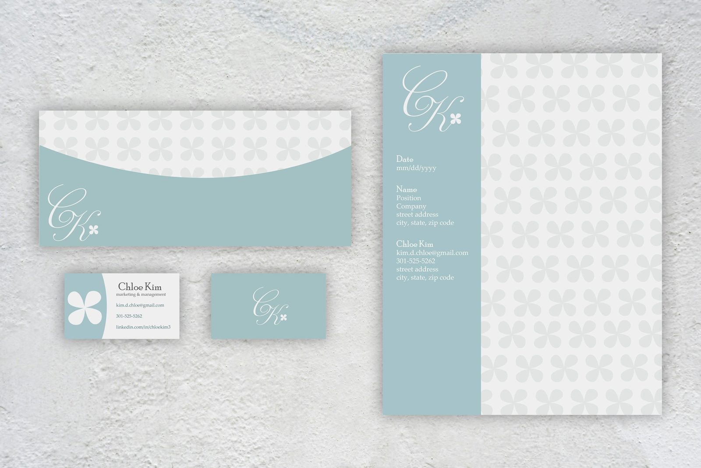
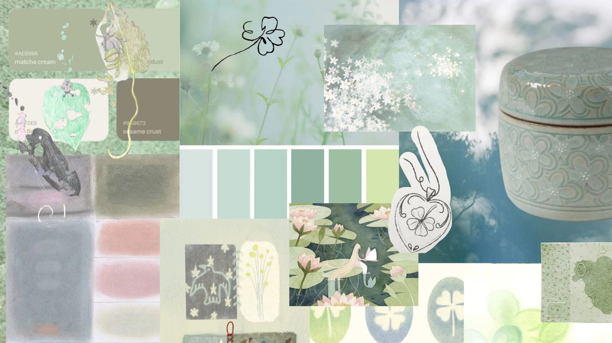
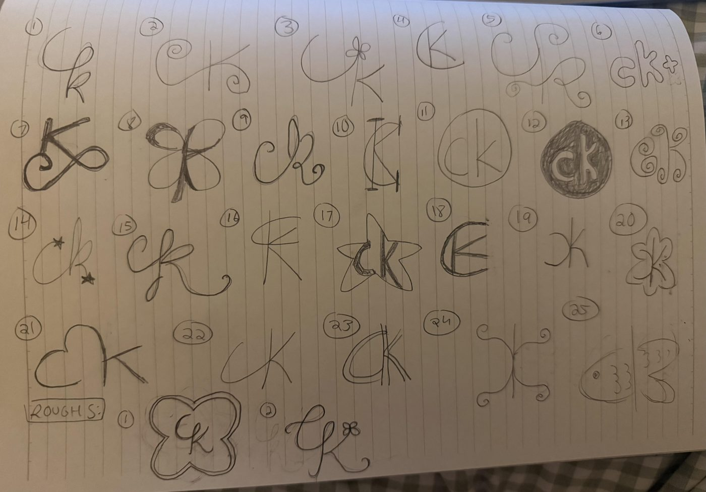
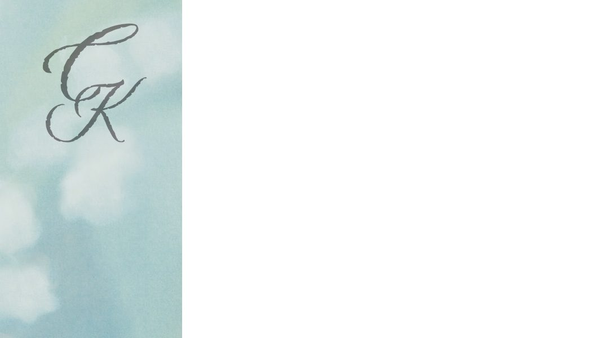

Personal Brand Identity
A complete personal identity system (monogram, pattern, business card, letterhead and envelope) that also shapes the look of this website.
- Role
- Designer (individual)
- Context
- Strategic Design Fellows
- Tools
- Adobe Creative Suite
- Deliverables
- Logo, stationery suite
1Problem
Create a professional identity that feels personal: something that tells recruiters who I am before they read a word, and works consistently across print and digital.
2Challenges
[Edit: e.g. balancing a soft, approachable personality with a polished, business-ready look; designing a monogram that reads well at business-card size; choosing a palette that’s calm but not bland.]
3What I did
I started with a moodboard of celadon pottery, clovers and soft botanical tones, sketched monogram concepts, then refined a flowing CK script paired with a four-petal clover. The dusty teal and soft grey palette and a repeating clover pattern tie every piece together.
4Outcome
[Edit: e.g. a cohesive stationery suite, positive critique feedback, and a brand system I now use on my resume, LinkedIn and this portfolio.]



Creative brief
| Objective | Develop a personal brand identity that communicates my personality and professional focus in marketing & management. |
|---|---|
| Audience | Recruiters, hiring managers, professors and professional contacts. |
| Brand personality | [e.g. Calm, thoughtful, approachable, refined] |
| Key message | [e.g. Thoughtful strategy with a creative, human touch] |
| Deliverables | Logo (color and black & white), business card (front & back), letterhead, #10 envelope |
| Mandatories | [Any requirements from the assignment] |
| Timeline | [Dates] |